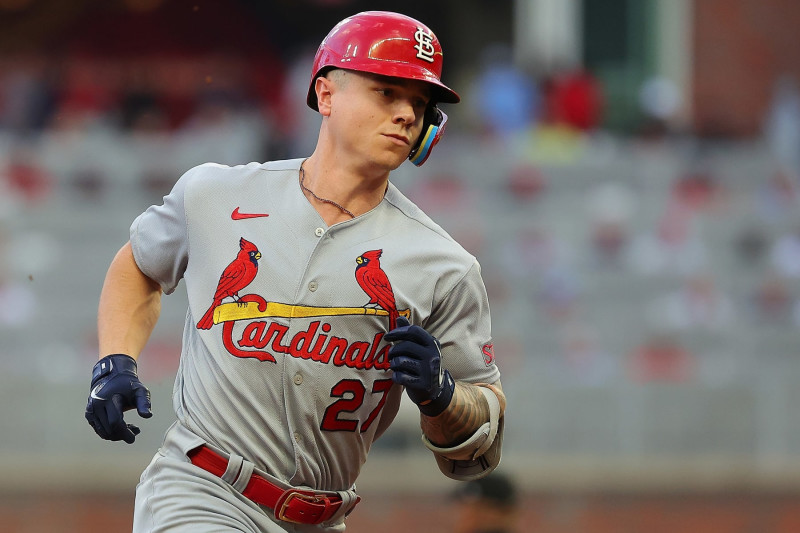
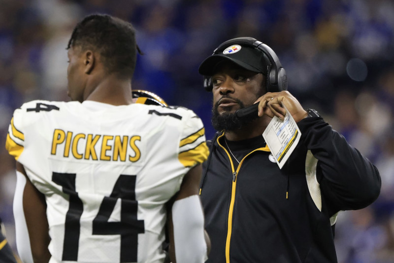

Red Sox News: Cardinals Trade Tyler O'neill for Nick Robertson, Victor Santos
St. Louis Cardinals outfielder Tyler O'Neill has been traded to the Boston Red Sox, according to Jon Heyman of the New York Post. The Cardinals will receive pitchers Nick Robinson and Victor Santos in the deal, per Alex Speier of The Boston Globe. In 266 plate appearances during the 2023 season, O'Neill hit .231 while racking up nine home runs and 21 RBIs. Although his offensive production hasn't been spectacular throughout the past couple of seasons, O'Neill remains a superb defender who has two Gold Glove awards to his name.
He's been plagued by injuries ever since, appearing in just 168 contests throughout the past two seasons. This included a foot issue that caused him to miss the final 14 games of his 2023 campaign. Cardinals president of baseball operations John Mozeliak hasn't been shy about O'Neill's future with the team, telling reporters about the front office's intent to move him to a location where he can get consistent playing time.
Steelers' Mike Tomlin Calls George Pickens' In-Game Frustrations 'A Problem'
George Pickens was visibly frustrated on both the sidelines and the playing field during Thursday's 21-18 loss to the England Patriots, to the point that Prime Video analyst Kirk Herbstreit called it a "bad look" on the broadcast when the Pittsburgh Steelers wideout didn't make much of an effort on a run play. And head coach Mike Tomlin isn't happy about it.
"It is a problem because it's not solution-oriented," he told reporters regarding Pickens' actions Monday. "We're all frustrated, but we got to manage our frustrations in a professional, mature way and when it's not done that way, it's not necessarily pushing us toward solutions.""He's probably frustrated. My job is just to continue to tell him to keep his head in the game," he told reporters. "You never know when your opportunity is going to come and you can't let one bad play define you. So I'm always there for him, trying to keep his head in the game and keep his energy up, at the same time we need him. If your energy is down and the ball comes your way, you may not to be able to make a play. But he'll be fine." Pickens, 22, was targeted six times in the loss, recording five catches for 19 yards. The Patriots held the Steelers to just 182 yards through the air, as Mitchell Trubisky—who got the start for the injured Kenny Pickett—threw a touchdown, interception and took two sacks.
Credits